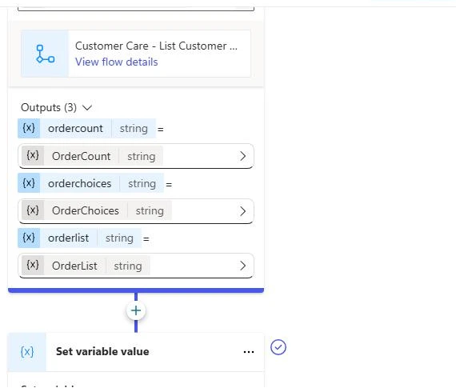

- Project deep dive
- Vink Customer Care Agent · Part 5 of 11
5 · Agent flows as tools
Where this page fits
Step 1
Customer chat
Step 2
Agent: instructions, topics, knowledge
This page · Step 3
Agent flows (tools)
This page · Step 4
Dataverse tables
Step 5
Background flows
Step 6
Care Hub app
Highlighted boxes are what this page explains. The chain runs left to right, top row then bottom row.
The story so farVerification needed data the agent doesn't have. It got it by calling a flow. Every read and write in Vink works this way.
From the root: why flows?
WhatAn agent flow is a Power Automate flow the agent can call like a function: inputs in, outputs back.
WhyFlows do what the AI shouldn't improvise: exact queries, rules, record creation, emails. The result is the same every time.
DemoFind Customer, Create Ticket, Get Ticket Details and eight more.

The contract: trigger in, response out
Every Vink agent flow
When an agent calls the flow: typed inputs (ContactId, OrderNumber, Category…)
Initialize every output variable with a safe default
Try
Dataverse queries and writes
Set output variables
Catch
Set result to an error status
Respond to the agent: always runs, returns the variables
| Create Ticket | Name | Example from TKT-1020 |
|---|---|---|
| Inputs | ContactId, OrderNumber, Category, Subject, Description, AISummary, Priority, ForceNew, CustomerEmail | Delivery · High · ORD-10421 · ForceNew = no |
| Outputs | result, duplicate, ticketnumber, status, respondby, resolveby, team, priority | Created · TKT-1020 · Logistics · High |
The topic binds its variables to these inputs and outputs (Part 6 shows the call). Because the flow always reaches Respond, the topic always gets a result it can branch on: Created, Duplicate, or an error.
The 100-second rule
WhatAn agent flow must respond within 100 seconds; work after the Respond step can keep running.
WhyThe customer is waiting in the chat. A slow flow times out and the topic gets no answer.
DemoFind Customer queries by email and order with
$top=1 and selected columns only.Keeping flows fast
Filter in Dataverse (OData), not in loops
$select only needed columns, $top where one row is expectedPut slow follow-up work (emails, logs) in background flows (Part 8)
Respond in a few seconds
Calling flows from topics vs letting the agent choose
| Way | How | Used in Vink for |
|---|---|---|
| Inside a topic | A flow node with fixed input bindings | All account flows, so verification and order are guaranteed |
| As an agent-level tool | The orchestrator decides from the tool's description | Repair Update, when the warehouse trigger fires (Part 9) |

Watch out
- Tool descriptions say Used by topics only where the orchestrator shouldn't call them directly.
- Text inputs arrive as text: flows trim and convert them (
trim(),toUpper()). - Return small text values, not whole records.
New to this? Start from the basics optional
Agent flow: a flow with the When an agent calls the flow trigger and a Respond to the agent action.
Common mistakes
- A flow that can end without responding.
- Returning raw JSON for the agent to interpret.
- Slow loops inside an agent flow.
- Letting the orchestrator call write-tools without verification.
Related: Copilot Studio agent flows, Scopes and try/catch, FlowActionTimedOut in agent flows.